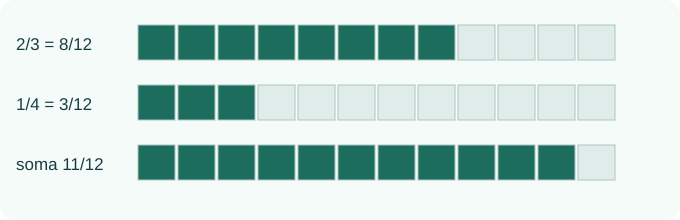

Preparação para o Vestibulinho ETEC · Módulo 01. Siga o roteiro essencial, revise a base apenas
quando necessário e deixe os desafios complementares para depois.
1. Roteiro principal — ensinar com calma
Os conteúdos essenciais ficam visíveis. Nos exercícios, o aluno marca uma alternativa,
confere a resposta e abre o gabarito.
Prioridades pedagógicas baseadas nas três provas enviadas (2024/2,
2026/1 e 2026/2) e nos conhecimentos necessários para resolvê-las. Não são uma previsão do
próximo exame nem exclusão oficial de conteúdos.
Usamos tipos diferentes de números no cotidiano. Observe os exemplos antes de aprender as operações.
Conjunto
O que representa
Exemplo
Naturais (ℕ)
Contagem: zero e inteiros positivos.
0, 1, 2, 3…
Inteiros (ℤ)
Incluem números negativos, zero e inteiros positivos.
−3, 0, 7
Racionais (ℚ)
Podem ser escritos como fração de inteiros, sem dividir por zero.
1/2, 0,5, −3
Irracionais (𝕀)
Não podem ser escritos como fração de inteiros. Seus decimais são infinitos e não se
repetem em um padrão periódico.
π, √2
Reais (ℝ)
Reúnem racionais e irracionais.
Todos os exemplos acima
Para a prova: o mais importante neste momento é reconhecer números negativos,
frações e decimais para conseguir fazer cálculos.
Revisão de base Aprofundamento: símbolos,
classificação e exercícios
Abra se o aluno ainda não souber distinguir os conjuntos. A
classificação formal não precisa ocupar a aula principal.
Imagine uma caixa de números. Podemos separar números usados para contar
objetos, medir temperaturas, representar pedaços de pizza ou medir comprimentos. Cada grupo
recebe um nome.
O que são conjuntos numéricos?
São grupos de números com características em comum.
Um mesmo número pode pertencer a mais de um conjunto. Por exemplo, 6 é natural, inteiro,
racional e real.
Naturais (ℕ)
São os números de contagem.
Incluem o zero e os inteiros positivos.
ℕ = {0, 1, 2, 3, …}
O símbolo ℕ* exclui o zero: {1, 2, 3, …}.
Inteiros (ℤ)
Incluem os números naturais e os inteiros negativos.
ℤ = {…, −2, −1, 0, 1, 2, …}
Exemplos: −7, 0 e 5.
Racionais (ℚ)
Podem ser escritos como divisão de dois números inteiros.
ab com b ≠ 0
a é o numerador e b é o denominador.
O denominador não pode ser zero, pois não existe divisão por zero.
Decimais finitos, como 0,5, e dízimas periódicas, como 0,666…, são racionais.
Os inteiros também são racionais, pois podem ser escritos com denominador 1, por exemplo:
−7 = −71.
Irracionais (𝕀)
Não podem ser escritos como fração de dois inteiros.
Sua representação decimal é infinita e não periódica.
Exemplos: π e √2.
Reais (ℝ)
Incluem todos os números racionais e irracionais.
ℝ = ℚ ∪ 𝕀
∪ significa união: reúne os elementos dos dois conjuntos.
⊂ significa inclusão: todos os elementos de um conjunto pertencem ao
outro conjunto.
Por que os conjuntos se encaixam?
O número 4 serve para contar quatro livros. Portanto, é natural.
Ele também é inteiro, pois não tem parte decimal.
Podemos escrever 4 como uma divisão de inteiros:
4 = 41
Então também é racional. Como os racionais fazem parte dos reais, 4 pertence a todos
esses conjuntos.
Quando a questão pede o menor conjunto, escolhemos o mais específico: ℕ.
ℕ ⊂ ℤ ⊂ ℚ ⊂ ℝ
Os naturais estão dentro dos inteiros, que estão dentro dos racionais;
irracionais ficam fora de ℚ.
Exemplo resolvido 1 — Como 0,5 vira uma fração?
O número 0,5 tem um algarismo depois da vírgula. Isso significa cinco décimos.
Escreva 5 no numerador e 10 no denominador: 0,5 = 510.
Simplifique dividindo o numerador e o denominador por 5: 5 ÷ 510 ÷ 5.
Efetue as divisões: 12.
Conferindo: 1 ÷ 2 = 0,5.
0,5 = 510 =
12
Portanto, 0,5 é racional.
Exemplo resolvido 2 — Por que √36 = 6?
Uma raiz quadrada procura o número não negativo que, multiplicado por ele mesmo, resulta
no número que está dentro da raiz.
Qual número multiplicado por ele mesmo resulta em 36?
6 × 6 = 36.
6² = 36.
Logo, √36 = 6.
6 é natural. Portanto, nem toda raiz é irracional.
Exemplo resolvido 3 — Classificação
Classifique −4, 0,5, √49 e √2 no menor conjunto possível (ou como irracional).
−4 é um número inteiro negativo. Não é natural. Logo, pertence a ℤ.
0,5 = 12. É uma fração de
inteiros, mas não é inteiro. Logo, pertence a ℚ.
√49 = 7, porque 7 × 7 = 49. Como 7 é um número de contagem, pertence a ℕ.
√2 = 1,414213… (decimal infinito e não periódico). É irracional, pertence a 𝕀.
ℤ; ℚ; ℕ; 𝕀
Cuidado: Nem toda raiz é irracional: √36 = 6.
Exercício de fixação
Aquecimento · autoral
Qual é o menor conjunto ao qual pertence o número 0?
🔽 Ver gabarito comentado
Gabarito: A) ℕ
Observe o número
Zero não é negativo e não tem parte decimal.
Consulte os naturais
Nesta aula, ℕ inclui o zero.
ℕ = {0, 1, 2, 3, …}
Escolha o menor conjunto
Zero também pertence aos inteiros, racionais e reais, mas ℕ é o mais
específico.
Fixação 01 · autoral
Classifique −7, 0,75, √81 e π no menor conjunto possível (ou como irracional),
respectivamente.
🔽 Ver gabarito comentado
Gabarito: D) ℤ; ℚ; ℕ; 𝕀
Classifique −7
É um número negativo sem parte decimal. Não pode ser natural porque
os naturais começam no zero.
−7 ∈ ℤ
Classifique 0,75
Há dois algarismos depois da vírgula. Isso representa 75 centésimos.
0,75 = 75100
Simplifique
25 divide os dois números: 75 ÷ 25 = 3 e 100 ÷ 25 = 4. Por isso é
racional.
75100 = 75 ÷ 25100 ÷ 25
= 34
Classifique √81
A raiz quadrada procura o número não negativo que, multiplicado por
ele mesmo, dá 81.
9 × 9 = 81
√81 = 9 ∈ ℕ
Classifique π
Sua parte decimal continua infinitamente sem repetir um bloco fixo.
Não pode ser escrito como divisão de dois inteiros.
π ∈ 𝕀
O símbolo ∈ significa “pertence a”. A ordem pedida é inteiro, racional, natural e
irracional.
Aprenda a ordem das operações para não perder pontos em cálculos com várias etapas.
O que é uma expressão numérica?
É uma sequência de números e operações matemáticas. Uma expressão pode ter adição, subtração,
multiplicação, divisão, potências e raízes.
Não podemos resolver todas as operações simplesmente na ordem em que aparecem. Existe uma ordem de
prioridade que garante que todos encontrem o mesmo resultado.
Por que a ordem importa?
Você compra 3 cadernos de R$ 4 e uma borracha de R$ 2. Primeiro precisamos saber quanto custam os
cadernos juntos.
2 + 3 × 4
Multiplique primeiro
São 3 cadernos, cada um de R$ 4.
3 × 4 = 12
Some o outro preço
Agora acrescentamos a borracha.
2 + 12 = 14
Se somássemos 2 + 3 primeiro, estaríamos juntando reais com quantidade de cadernos.
1. Resolva os agrupamentos de dentro para fora
Os símbolos de agrupamento indicam quais partes da expressão devem ser resolvidas juntas.
Parênteses ( ): quando estão no interior dos demais agrupamentos, resolvemos
primeiro as operações dentro deles.
Colchetes [ ]: em seguida, resolvemos as operações dentro dos colchetes.
Chaves { }: por último, resolvemos as operações dentro das chaves.
{ [ ( ) ] } Parênteses → Colchetes → Chaves
Essa é a disposição habitual. A regra geral é começar pelo agrupamento mais interno, mesmo que os
símbolos estejam em outra ordem. Dentro de cada agrupamento, também respeitamos a prioridade das
operações.
2. Potenciação e radiciação
Depois dos agrupamentos, resolva as potências (multiplicações repetidas) e as raízes (operação
inversa da potenciação), respeitando a estrutura da expressão.
2³ = 2 × 2 × 2 = 8 √49 = 7, pois 7 × 7 = 49
3. Multiplicação e divisão
Em seguida, resolva as multiplicações e divisões. Elas possuem a mesma prioridade; quando aparecem em
sequência, resolva da esquerda para a direita.
24 ÷ 4 × 2 = 6 × 2 = 12
Não faça 4 × 2 primeiro: a divisão aparece antes da multiplicação.
4. Adição e subtração
Por último, resolva as somas e subtrações. Elas também possuem a mesma prioridade, então siga da
esquerda para a direita.
15 − 8 + 2 = 7 + 2 = 9
Resumo da ordem de resolução
1. Agrupamentos ↓ 2. Potências e raízes ↓ 3. Multiplicações e
divisões ↓ 4. Adições e subtrações
Exemplo resolvido 1 — Uma operação de cada vez
Calcule 20 − 2 × (3 + 4) + 2².
Parênteses: 3 + 4 = 7. Substitua somente o parêntese. 20 − 2 × 7
+ 2²
Potência: 2² = 2 × 2 = 4. 20 − 2 × 7 + 4
Multiplicação: 2 × 7 = 14. 20 − 14 + 4
Subtração: 20 − 14 = 6. 6 + 4
Adição: 6 + 4 = 10. Resposta: 10.
Cuidado: multiplicação não tem prioridade sobre divisão, e adição
não tem prioridade sobre subtração. Nessas duplas, respeite a ordem da esquerda para a direita.
Exercício de fixação
Aquecimento · autoral
Calcule 2 + 3 × 4.
🔽 Ver gabarito comentado
Gabarito: B) 14
Faça a multiplicação
Multiplicar tem prioridade sobre somar.
3 × 4 = 12
Some
Substitua somente a multiplicação por seu resultado.
2 + 12 = 14
Fixação 03 · autoral
Resolva 30 − 4 × (2 + 3) + √81.
🔽 Ver gabarito comentado
Gabarito: C) 19
30 − 4 × (2 + 3) + √81
Resolva os parênteses
O agrupamento mais interno tem prioridade.
2 + 3 = 5
30 − 4 × 5 + √81
Calcule a raiz
9 × 9 = 81, então √81 = 9.
30 − 4 × 5 + 9
Faça a multiplicação
Ela vem antes da soma e da subtração.
4 × 5 = 20
30 − 20 + 9
Subtraia da esquerda para a direita
30 menos 20 resulta em 10.
10 + 9
Some
Agora resta apenas uma adição.
10 + 9 = 19
Complementar Desafio: expressões com três
níveis de agrupamento
Faça somente se o aluno já resolver expressões com parênteses,
potências e operações básicas.
Exemplo resolvido 2 — Parênteses, colchetes e chaves
MMC: quando a pergunta fala em “quando voltarão a acontecer juntos”, “de quanto em
quanto tempo coincidem”, ou “qual o menor número comum”.
MDC: quando a pergunta fala em “maior quantidade de grupos iguais”, “dividir sem
sobras” ou “maior medida possível”.
MMC(12, 18) = 36 MDC(12, 18) = 6
Revisão de base Aplicação extra de MDC: kits iguais
sem sobras
O MDC foi resumido na aula principal; abra para praticar a
aplicação em problemas.
Exemplo resolvido 3 — Aplicação do MDC
Uma professora tem 12 lápis e 18 borrachas. Ela quer montar a maior quantidade de kits
idênticos, usando todos os materiais. Quantos kits poderá montar?
Precisamos dividir as duas quantidades pelo mesmo número, sem sobras. Isso
indica uso do MDC.
Já vimos acima que MDC(12, 18) = 6.
Portanto, poderão ser montados 6 kits.
Em cada kit haverá 12 ÷ 6 = 2 lápis e 18 ÷ 6 = 3 borrachas.
Fixação · autoral
Uma escola possui 24 cadernos e 36 canetas. Qual é a maior quantidade de kits idênticos
que pode montar, utilizando todo o material?
🔽 Ver gabarito comentado
Gabarito: B) 12 kits
Queremos o maior número de kits iguais sem sobrar material. Isso significa que
precisamos de um número que divida tanto 24 quanto 36: usamos o MDC.
24
36
2
12
18
2
6
9
3
2
3
MDC de 24 e 36 — só fatores comuns
Divida ambos por 2
24 ÷ 2 = 12 e 36 ÷ 2 = 18.
Divida ambos por 2 novamente
12 ÷ 2 = 6 e 18 ÷ 2 = 9.
Divida ambos por 3
6 ÷ 3 = 2 e 9 ÷ 3 = 3.
Pare
2 e 3 não têm um divisor primo comum. Multiplique os divisores
usados.
2 × 2 × 3 = 12
Calcule os itens por kit
Distribua os 24 cadernos entre os 12 kits.
24 ÷ 12 = 2
36 ÷ 12 = 3
Em cada kit há 2 cadernos e 3 canetas. Não há sobras.
Exercício de fixação
Aquecimento · autoral
Qual é o MMC de 4 e 6?
🔽 Ver gabarito comentado
Gabarito: D) 12
4
6
2
2
3
2
1
3
3
1
1
Fatoração de 4 e 6
Divida por 2
4 ÷ 2 = 2 e 6 ÷ 2 = 3.
Divida por 2 novamente
2 ÷ 2 = 1; o 3 permanece.
Divida por 3
3 ÷ 3 = 1.
Multiplique os fatores
Todos os números chegaram a 1.
2 × 2 × 3 = 12
Fixação 04 · autoral
Duas luzes piscam juntas no instante inicial. Depois, uma pisca a cada 8 segundos e a outra a
cada 12 segundos. Em quanto tempo piscarão juntas novamente?
🔽 Ver gabarito comentado
Gabarito: A) 24 segundos
As duas luzes piscam juntas no início. Queremos o primeiro instante positivo em que isso
vai acontecer novamente. Por isso usamos o MMC.
8
12
2
4
6
2
2
3
2
1
3
3
1
1
MMC de 8 e 12 — fatoração simultânea
Divida por 2
8 ÷ 2 = 4 e 12 ÷ 2 = 6.
Divida novamente por 2
4 ÷ 2 = 2 e 6 ÷ 2 = 3.
Divida por 2 mais uma vez
2 ÷ 2 = 1; o 3 permanece porque não é divisível por 2.
Divida por 3
3 ÷ 3 = 1; o outro número já é 1.
Multiplique os fatores da direita
Para o MMC, usamos todos os fatores.
2 × 2 × 2 × 3
4 × 2 × 3
8 × 3 = 24
Luz de 8 s
Luz de 12 s
8
12
16
24
24
36
24 é o primeiro número positivo que aparece nas duas sequências.
Revisão de base Exercício extra de divisores
Fixação · autoral
Qual alternativa apresenta todos os divisores positivos de 18?
🔽 Ver gabarito comentado
Resposta: A) 1, 2, 3, 6, 9 e
18
Montamos os pares de fatores de 18: 18 = 1 × 18 18 = 2 ×
9 18 = 3 × 6
Agora reunimos todos os números que apareceram: 1, 2, 3, 6, 9 e 18.
Base para operar com frações de tamanhos diferentes. Siga o passo a passo da tabelinha de MMC.
1. Denominadores iguais
Denominadores iguais (números de baixo): some ou subtraia apenas os numeradores
(números de cima).
O denominador indica o tamanho das partes. Se as partes têm o mesmo tamanho, basta contar quantas
delas foram reunidas ou retiradas.
Exemplo 1 — Adição com denominadores iguais
Primeira fração: 2 de 7 partes.
Acrescentamos mais 3 partes do mesmo tamanho. Agora temos 5/7.
Observe os denominadores.
As duas frações estão divididas em 7 partes iguais.
27 + 37
Some os numeradores.
Temos duas partes e acrescentamos mais três. O denominador continua sendo 7.
2 + 37 =
57
Exemplo 2 — Subtração com denominadores iguais
Começamos com 7/9; as 2 partes riscadas são retiradas.
Restam 5 de 9 partes.
Observe os denominadores.
As duas frações têm denominador 9.
79 − 29
Subtraia os numeradores.
De sete partes, retiramos duas. Mantemos o denominador.
7 − 29 =
59
2. Denominadores diferentes
Denominadores diferentes: encontre o MMC, reescreva cada fração equivalente e só
então some ou subtraia.
Não podemos juntar diretamente terços e quartos, porque são partes de tamanhos diferentes. Primeiro
precisamos transformá-las em partes do mesmo tamanho.

Reescrevemos 2/3 e 1/4 em doze partes iguais antes de somar.
Exemplo resolvido — Calcule 2/3 + 1/4
23 + 14
Passo 1 — Calcule o MMC dos denominadores
O MMC é o menor número que aparece tanto na tabuada de 3 quanto na de 4. Usaremos 12 para dividir
as duas barras em pedaços do mesmo tamanho.
Os denominadores são 3 e 4. Vamos montar a tabela de fatoração.
Fatoração simultânea de 3 e 4
3
4
2
3
2
2
3
1
3
1
1
Comece pelo 2.
4 é divisível por 2; 3 não é. Divida 4 por 2 e repita o 3.
4 ÷ 2 = 2
Use o 2 novamente.
Divida 2 por 2 e mantenha o 3.
2 ÷ 2 = 1
Agora use o 3.
Divida 3 por 3. Chegamos a 1 nos dois números.
3 ÷ 3 = 1
Multiplique os fatores da coluna direita.
Para o MMC, usamos todos os fatores da tabela.
MMC(3, 4) = 2 × 2 × 3 = 4 × 3 = 12
Passo 2 — Transforme a primeira fração
Divida o MMC pelo denominador original.
O denominador original é 3. Queremos chegar a 12. Descobrimos por quanto ele precisa
ser multiplicado.
12 ÷ 3 = 4
Multiplique o numerador pelo resultado.
Como multiplicaremos o denominador por 4, precisamos multiplicar o numerador 2 pelo
mesmo número para manter o valor da fração.
2 × 4 = 8
Escreva a fração equivalente.
O novo numerador é o resultado da multiplicação. O novo denominador é o MMC.
23 = 2 × 43 × 4 = 812
Passo 3 — Transforme a segunda fração
Divida o MMC pelo denominador original.
O denominador original é 4. Queremos chegar a 12. Descobrimos por quanto ele precisa
ser multiplicado.
12 ÷ 4 = 3
Multiplique o numerador pelo resultado.
Como multiplicaremos o denominador por 3, precisamos multiplicar o numerador 1 pelo
mesmo número para manter o valor da fração.
1 × 3 = 3
Escreva a fração equivalente.
O novo numerador é o resultado da multiplicação. O novo denominador é o MMC.
14 = 1 × 34 × 3 = 312
2/3: duas partes grandes de três.
8/12: a mesma quantidade, agora com pedaços menores.
1/4: uma parte de quatro.
3/12: a mesma quantidade da fração anterior.
Passo 4 — Some as frações
Agora as duas frações possuem denominador 12. Somamos somente os numeradores.
812 + 312
8 + 312
1112
Juntando 8 pedaços e 3 pedaços do mesmo tamanho, obtemos 11/12.
Cuidado: Não some nem subtraia os denominadores. Se forem
diferentes, transforme as frações antes de operar.
Exercício de fixação
Aquecimento · autoral
Calcule 25 + 15.
🔽 Ver gabarito comentado
Gabarito: C) 35
Duas partes de cinco.
Mais uma parte: três partes de cinco.
Compare os denominadores
Ambos valem 5. As partes têm o mesmo tamanho.
Some os numeradores
Mantenha 5 embaixo.
2 +
15
35
Fixação 06 · autoral
Calcule 56 − 14.
🔽 Ver gabarito comentado
Resposta: C) 7/12
Passo 1 — Calcule o MMC
Os denominadores são 6 e 4.
Fatoração simultânea de 6 e 4
6
4
2
3
2
2
3
1
3
1
1
Divida os dois números por 2.
6 ÷ 2 = 3 e 4 ÷ 2 = 2.
Divida por 2 novamente.
3 não é divisível por 2, então repita o 3. Já 2 ÷ 2 = 1.
Divida por 3.
3 ÷ 3 = 1. Os dois números chegaram a 1.
MMC(6, 4) = 2 × 2 × 3 = 12
Passo 2 — Transforme 5/6
Divida o MMC pelo denominador original.
O denominador original é 6. Queremos chegar a 12. Descobrimos por quanto ele
precisa ser multiplicado.
12 ÷ 6 = 2
Multiplique o numerador pelo resultado.
Como multiplicaremos o denominador por 2, precisamos multiplicar o numerador
5 pelo mesmo número para manter o valor da fração.
5 × 2 = 10
Escreva a fração equivalente.
O novo numerador é o resultado da multiplicação. O novo denominador é o MMC.
56
= 5 × 26 × 2 = 1012
Passo 3 — Transforme 1/4
Divida o MMC pelo denominador original.
O denominador original é 4. Queremos chegar a 12. Descobrimos por quanto ele
precisa ser multiplicado.
12 ÷ 4 = 3
Multiplique o numerador pelo resultado.
Como multiplicaremos o denominador por 3, precisamos multiplicar o numerador
1 pelo mesmo número para manter o valor da fração.
1 × 3 = 3
Escreva a fração equivalente.
O novo numerador é o resultado da multiplicação. O novo denominador é o MMC.
14
= 1 × 34 × 3 = 312
Passo 4 — Subtraia os numeradores
Como os denominadores agora são iguais, mantemos 12 e subtraímos 3 de 10.
1012 − 312
10 − 312
712
10/12: dez partes; as três riscadas serão retiradas.
Sobram sete das doze partes.
7 e 12 não têm divisor comum maior que 1. A fração já está simplificada.
Prioridade: multiplicar e dividir frações simples. Expressões complexas são aprofundamento.
1. Multiplicação de frações
Multiplique o numerador (parte de cima) de uma fração pelo numerador da outra.
Depois, multiplique o denominador (parte de baixo) pelo outro denominador. Não é necessário calcular
o MMC.
Multiplicar uma fração por outra também pode significar escolher uma parte de outra parte. Veja o
desenho: primeiro separamos 2 das 5 colunas, depois tomamos 3 das 4 linhas. A interseção (em verde
escuro) tem 6 quadrinhos de um total de 20.
2/5 × 3/4 = 6/20 = 3/10.
Exemplo 1 — Multiplique as frações
Multiplique os numeradores.
2 vezes 3 é igual a 6.
2 × 3 = 6
Multiplique os denominadores.
5 vezes 4 é igual a 20.
5 × 4 = 20
Monte a fração e simplifique.
Divida 6 e 20 por 2.
25 × 34 = 620 = 310
2. Divisão de frações
Mantenha a primeira fração. Troque a divisão por uma multiplicação e inverta somente a segunda
fração.
Inverter significa trocar o numerador com o denominador. A segunda fração não pode ser zero.
Exemplo 2 — Divida as frações
Mantenha a primeira fração.
A primeira fração continua 2/3.
23 ÷ 45
Inverta a segunda fração.
4/5 vira 5/4. Troque ÷ por ×.
23 × 54
Multiplique.
2 × 5 = 10 e 3 × 4 = 12.
1012
Simplifique.
Divida numerador e denominador por 2.
1012 =
56
Por que inverter a segunda fração?
Dividir é descobrir quantas vezes uma quantidade cabe na outra. Quantas metades cabem em 2
inteiros?
Dois inteiros divididos em 4 metades (cada metade vale 1/2).
2 ÷ 12 = 4
Em cada inteiro cabem duas metades. Portanto, dividir por 1/2 é multiplicar por 2.
2 × 21 = 4
A ideia vale para outras frações: multiplicamos pelo inverso do divisor, pois uma fração vezes
seu inverso vale 1.
45 × 54 = 2020 = 1
3. Como escrever um número inteiro como fração?
Como transformar um inteiro em fração? Dividir qualquer número por 1 não altera seu
valor.
3 = 31
Por isso podemos escrever o inteiro com denominador 1 antes de operar com outra fração.
Cuidado: Inverta somente a segunda fração na divisão, nunca a
primeira.
Exercício de fixação
Aquecimento · autoral
Calcule 23 × 12.
🔽 Ver gabarito comentado
Gabarito: A) 13
Multiplique os numeradores
Os números de cima são 2 e 1.
2 × 1 = 2
Multiplique os denominadores
Os números de baixo são 3 e 2.
3 × 2 = 6
Monte a fração
Escreva os dois resultados na posição correta.
26
Simplifique por 2
Divida o numerador e denominador pelo mesmo número.
2 ÷ 26 ÷
2 = 13
Fixação essencial · autoral
Calcule 34 ÷ 12.
🔽 Ver gabarito comentado
Gabarito: B) 32
Identifique a operação.
A divisão pede quantas metades cabem em três quartos.
34
÷ 12
Mantenha a primeira fração e inverta a segunda.
O inverso de 1/2 é 2/1. Dividir por uma metade equivale a multiplicar por 2.
34
× 21
Multiplique os números de cima.
Os numeradores são 3 e 2.
3 × 2 = 6
Multiplique os números de baixo.
Os denominadores são 4 e 1.
4 × 1 = 4
Simplifique.
O 6 e o 4 são divisíveis por 2. Dividir os dois pelo mesmo número mantém o
valor.
64
= 6 ÷ 24 ÷ 2 = 32
Complementar Frações complexas e expressões
com várias operações
Estude depois de dominar as quatro operações com frações.
Uma fração complexa contém outras frações no numerador ou no denominador. Resolva cada parte
separadamente antes da divisão final.
Quando houver parênteses, respeite a ordem das operações: multiplicação e divisão antes da
adição e subtração.
Exemplo resolvido — Calcule a expressão
(2 − 12 × 3) ÷
5
Resolva a multiplicação dentro dos parênteses.
Escreva 3 como 3/1 e multiplique numerador por numerador, denominador por
denominador.
12
× 31 = 1 × 32 × 1 = 32
Transforme o número inteiro 2 em fração.
2 = 2/1. O MMC de 1 e 2 é 2. Multiplique numerador e denominador por 2.
2 = 21 = 2 × 21 × 2 = 42
Faça a subtração.
Os denominadores são iguais. Subtraia 3 de 4.
42
− 32 = 4 − 32 = 12
Divida por 5.
5 = 5/1. Seu inverso é 1/5.
12
÷ 51 = 12 × 15
Multiplique os numeradores e os denominadores.
1 × 1 = 1 e 2 × 5 = 10.
110
Fixação 07 · autoral
Calcule (1 + 34) ÷ 12.
🔽 Ver gabarito comentado
Resposta: B) 7/2
A divisão só será feita depois da conta dentro dos parênteses. Escrever um número
inteiro como fração de denominador 1 não altera seu valor.
Resolva a adição dentro dos parênteses.
Escreva 1 como 1/1. O MMC de 1 e 4 é 4.
11 + 34
Transforme 1/1 em uma fração com denominador 4.
4 ÷ 1 = 4. Multiplique o numerador e o denominador por 4.
11 = 1 × 41 × 4 =
44
Some os numeradores.
4 + 3 = 7. Mantenha o denominador 4.
44 + 34 = 74
Troque a divisão por multiplicação.
Inverta a segunda fração: 1/2 vira 2/1.
74 ÷ 12 = 74 × 21
Multiplique.
7 × 2 = 14 e 4 × 1 = 4.
144
Simplifique por 2.
14 ÷ 2 = 7 e 4 ÷ 2 = 2.
14 ÷
24 ÷ 2 = 72
Conferência: multiplicar o quociente pelo divisor deve recuperar
o dividendo.
Prioridade alta: números decimais aparecem em problemas de medidas, porcentagens e tabelas.
1. O que são números decimais?
A vírgula separa a parte inteira da parte decimal. A primeira casa à direita representa décimos; a
segunda, centésimos; a terceira, milésimos.
0,75 = 75100 = 34
Unidades
Vírgula
Décimos
Centésimos
Milésimos
2
,
4
5
6
2,456 = 2 + 410 + 5100 + 61000
Cada casa à direita vale dez vezes menos que a casa anterior. Em R$ 2,45, os 45 centavos são 45
partes de 100 de um real.
2. Adição e subtração
Alinhe as vírgulas umas abaixo das outras. Complete com zeros à direita se for necessário.
Exemplo 1 — Calcule 1,25 + 0,5
Iguale as casas decimais.
0,5 tem o mesmo valor que 0,50.
0,5 = 0,50
Monte a conta.
Some centésimos, décimos e unidades, da direita para a esquerda.
1,25 +0,50
1,75
Resultado.
A vírgula permanece na mesma posição.
1,75
Exemplo extra — 3,2 − 1,45
Complete 3,2 com zero: 3,20. Alinhe as vírgulas antes de subtrair.
3,20 −1,45 1,75
Centésimos
0 não permite retirar 5. Pegamos um décimo emprestado: ele vale 10 centésimos.
10 − 5 = 5
Décimos
Dos 2 décimos, sobrou 1. Para retirar 4, pegamos uma unidade emprestada, que vale 10
décimos.
11 − 4 = 7
Unidades
Das 3 unidades sobraram 2.
2 − 1 = 1
3,20 − 1,45 = 1,75
3. Multiplicação
Multiplique os números como se não houvesse vírgula.
Depois, conte quantas casas decimais os dois fatores possuem juntos e coloque a vírgula no resultado.
Exemplo 2 — Calcule 1,5 × 0,2
Ignore as vírgulas temporariamente.
1,5 vira 15 e 0,2 vira 2.
15 × 2 = 30
Conte as casas decimais.
1,5 tem uma casa decimal. 0,2 também tem uma.
1 + 1 = 2 casas
Coloque a vírgula.
Conte duas casas da direita para a esquerda em 30.
0,30 = 0,3
Por que contamos as casas na multiplicação?
1,5 = 1510
0,2 = 210
1510 × 210
15 × 210 × 10
30100 = 0,30
Ao multiplicar dois décimos, o denominador vira 100. É por isso que colocamos duas casas
decimais.
4. Divisão
Quando o divisor tem vírgula, multiplique os dois números pela mesma potência de 10 até que o divisor
seja inteiro. Isso não altera o resultado da divisão.
Exemplo 3 — Calcule 4,5 ÷ 0,5
Elimine a vírgula do divisor.
Multiplique 0,5 por 10.
0,5 × 10 = 5
Faça o mesmo com o dividendo.
Multiplique 4,5 por 10.
4,5 × 10 = 45
Divida os números inteiros.
5 × 9 = 45.
45 ÷ 5 = 9
Multiplicar o dividendo e o divisor pelo mesmo número preserva o quociente, assim como nas frações
equivalentes.
Revisão rápida: concentre-se nas raízes quadradas exatas, úteis em geometria e Pitágoras.
1. Raiz quadrada
A raiz quadrada de um número não negativo é o número não negativo que, multiplicado por ele mesmo,
resulta no número original.
√36 = 6, porque 6 × 6 = 36
O número dentro do símbolo √ é chamado de radicando. Quando o índice não aparece, ele é 2.
6 linhas × 6 colunas = 36 quadradinhos. A raiz quadrada de 36 é 6, o lado do quadrado.
Número
Quadrado
Raiz quadrada
1
1 × 1 = 1
√1 = 1
2
2 × 2 = 4
√4 = 2
3
3 × 3 = 9
√9 = 3
4
4 × 4 = 16
√16 = 4
5
5 × 5 = 25
√25 = 5
6
6 × 6 = 36
√36 = 6
7
7 × 7 = 49
√49 = 7
8
8 × 8 = 64
√64 = 8
9
9 × 9 = 81
√81 = 9
10
10 × 10 = 100
√100 = 10
Cuidado: √49 = 7. Já a equação x² = 49 tem duas soluções: 7 e −7.
Exercício de fixação
Aquecimento · autoral
Qual é a raiz quadrada de 25?
🔽 Ver gabarito comentado
Gabarito: D) 5
Procure um número não negativo
A raiz quadrada principal procura um número que multiplicado por ele mesmo dê
25.
5 × 5 = 25
Escreva a raiz
O número procurado é 5.
√25 = 5
Fixação essencial · autoral
Um piso quadrado tem área de 81 m². Qual é a medida de cada lado?
🔽 Ver gabarito comentado
Gabarito: B) 9 m
Identifique o que a pergunta pede.
O lado é o comprimento de uma das bordas do quadrado. Todos os lados são
iguais.
Área = lado × lado
Substitua a área.
A área informada é 81 metros quadrados. Precisamos achar o comprimento que,
multiplicado por ele mesmo, dá 81.
lado × lado = 81
Encontre a raiz quadrada.
9 × 9 = 81. Como uma medida de comprimento não é negativa, escolhemos 9.
√81 = 9
Escreva a unidade.
A área é medida em m², mas o lado é um comprimento, medido em metros.
lado = 9 m
Complementar Raízes cúbicas e simplificação
de radicais
Essas técnicas não são necessárias para calcular raízes quadradas
exatas. Deixe para aprofundamento depois dos assuntos prioritários.
2. Raiz cúbica
A raiz cúbica procura o número que, usado como fator três vezes, resulta no radicando. Ela
também pode ser negativa.
∛27 = 3, porque 3 × 3 × 3 = 27
3. Simplificação de raízes
Procure um fator que seja um quadrado perfeito, como 4, 9, 16, 25, 36, 49 ou 64.
Podemos separar o produto em duas raízes quadradas quando os fatores são não negativos.
√(a × b) = √a × √b (a, b ≥ 0)
Um quadrado perfeito é um número que resulta da multiplicação de um inteiro por ele mesmo.
Para encontrar um fator quadrado perfeito de 72, podemos testar 36: 72 ÷ 36 = 2.
72
2
36
2
18
2
9
3
3
3
1
Fatoração de 72: 2 × 2 × 2 × 3 × 3
Podemos formar os pares 2 × 2 e 3 × 3. A raiz de cada par sai da raiz como 2 e 3; sobra um 2
dentro.
√72 = 2 × 3 × √2 = 6√2
Exemplo 1 — Simplifique √72
Decomponha o radicando.
36 é um quadrado perfeito e divide 72 exatamente.
72 = 36 × 2
Separe as raízes.
A raiz do produto é o produto das raízes neste caso.
√72 = √36 × √2
Calcule a raiz exata.
6 × 6 = 36, então √36 = 6.
6 × √2
Escreva o resultado.
√2 não pode ser simplificada em um inteiro.
6√2
Exemplo 2 — Calcule ∛(−27)
Procure um número cujo cubo seja −27.
Precisamos de três fatores iguais.
(−3) × (−3) × (−3)
Faça as multiplicações.
Os dois primeiros fatores produzem +9.
9 × (−3) = −27
Conclua.
O número procurado é −3.
∛(−27) = −3
Fixação 10 · autoral
Simplifique √98 e calcule ∛64.
🔽 Ver gabarito comentado
Resposta: D) 7√2 e 4
Uma raiz pode ser exata, como ∛64, ou conter uma parte que não é um inteiro, como
√98. Vamos procurar fatores que possuam raiz exata.
98
2
49
7
7
7
1
98 = 2 × 7 × 7
Primeira expressão — √98
Fatore o radicando.
49 é quadrado perfeito e 49 × 2 = 98.
√98 = √(49 × 2)
Separe as raízes.
Os fatores são positivos.
√49 × √2
Calcule √49.
7 × 7 = 49.
7√2
Segunda expressão — ∛64
Procure o número cujo cubo seja 64.
Teste 4 como fator três vezes.
4 × 4 × 4
Calcule.
Primeiro 4 × 4 = 16, depois 16 × 4 = 64.
∛64 = 4
Os dois fatores 7 formam um par, portanto saem da raiz quadrada como um único 7.
O fator 2 fica dentro da raiz.
Prioridade alta: notação científica teve cobrança direta na prova de 2026/1, questão 19.
1. O que é notação científica?
É uma forma de escrever números muito grandes ou muito pequenos usando potências de 10.
N = a × 10n
Para números positivos, o coeficiente a deve ser maior ou igual a 1 e menor que 10. O expoente n
indica a potência de 10 necessária para recuperar o número original.
Potência de 10
Como calcular
Valor
10³
10 × 10 × 10
1.000
10²
10 × 10
100
10¹
10
10
10⁰
1
1
10⁻¹
1 ÷ 10
0,1
10⁻²
1 ÷ 100
0,01
10⁻³
1 ÷ 1.000
0,001
Se deslocamos a vírgula para diminuir o número, precisamos multiplicar por uma potência de 10 para
recuperar o valor inicial. Se deslocamos para aumentar, precisamos dividir.
2. Números maiores ou iguais a 10
Desloque a vírgula para a esquerda até restar somente um algarismo diferente de zero antes dela. O
expoente será positivo.
Exemplo 1 — Converta 6.500.000
Localize a vírgula.
Em um número inteiro, podemos imaginar a vírgula depois do último algarismo.